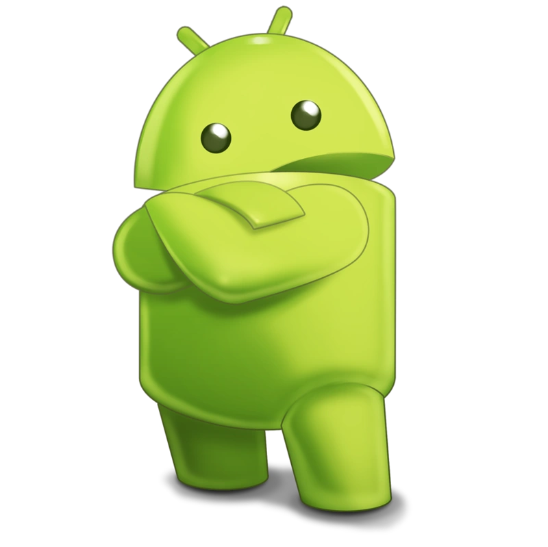

O Mascote Android
Provavelmente você sabe que o sistema operacional Android, mantido pelo Google é um dos mais utilizados para dispositivos móveis em todo o mundo. Mas tavez você não saiba que o seu simpático mascote tem um nome e uma história muito curiosa? Pois acompanhe esse artigo para aprender muita coisa sobre esse robozinho.
A primeira versão
A primeira tentativa de criar um mascote surgiu em 2007 e veio de um desenvolvedor chamadoDan Morrill. Ele conta que abriu oInkscape(software livre para vetorização de imagens) e criou sua própria versão de robô. O objetivo era apenas personificar o sistema apenas para a a sua equipe, não existia nenhuma solicitação da empresa para a criação de um mascote. Essa primeira versão bizarra até foi batizada em homenagem ao seu criador: seriam os Dandroids.

Surge um novo mascote
A ideia de ter um mascote foi amadurecendo e a missão foi passada para uma profissional da área. A ilustradora RussaIrina Blok, também funcionária do Google, ficou com a missão de representar o pequeno robô de uma maneira mais agradável.

A ideia principal da Irina era representar tudo graficamente com poucos traços e de forma mais chapada. O desenho também deveria gerar identificação rápida com quem o olha. Surgiu então o Bugdroid, o novo mascote do Android.

A principal inspiração para os traços do novo Bugdroid veio daqueles bonequinhos que ilustram portas de banheiro para indicar o gênero de cada porta. Conta a lenda que a artista estava criando em sua mesa no escritório do Google e olhou para o lado dos banheiros e a identificação foi imediata: simples, limpo, objetivo.
Quer aprender mais?
Outro assunto curioso em relação ao Android é que cada versão sempre foi nomeada em homenagem a um doce, em ordem alfabética a partir da versão 1.5 até a 9.0.
- Cupcake- versão 1.5
- Donut- versão 1.6
- Eclair- versão 3.0
- Froyo- versão 2.2
- Gingerbread- versão 2.3
- Honeycomb- versão 3.0
- Ice Cream Sandwich- versão 4.0
- Jelly Bean- versão 4.1
- KitKat- versão 4.4
- Lolipop- versão 5.0
- Marshmallow- versão 6.0
- Nougat- versão 7.0
- Oreo- versão 8.0
- Pie- versão 9.0
Infelizmente, o Android Q não existiu, pois o Google resolveu pôr fim a essa divertida prática e começou a usar numerações, o que deu origem ao Android 10.
Acesse aqui o site 👉Android Historypara conhecer a sequência das versões "adocicadas" e o que cada uma trouxe para o sistema Android.